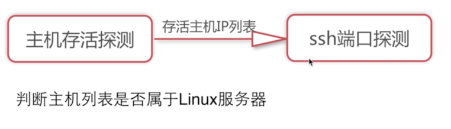
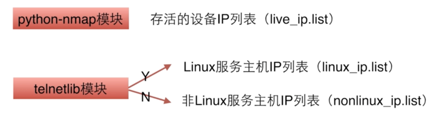

<!DOCTYPE html>
<!--[if IE 8]><html class="no-js lt-ie9" lang="en" > <![endif]-->
<!--[if gt IE 8]><!--> <html class="no-js" lang="en" > <!--<![endif]-->
<head>
  <meta charset="utf-8">
  <meta http-equiv="X-UA-Compatible" content="IE=edge">
  <meta name="viewport" content="width=device-width, initial-scale=1.0">
  
  
  <link rel="shortcut icon" href="../../img/favicon.ico">
  <title>Telnetlib端口扫描 - imoocc-project</title>
  <link href='https://fonts.googleapis.com/css?family=Lato:400,700|Roboto+Slab:400,700|Inconsolata:400,700' rel='stylesheet' type='text/css'>

  <link rel="stylesheet" href="../../css/theme.css" type="text/css" />
  <link rel="stylesheet" href="../../css/theme_extra.css" type="text/css" />
  <link rel="stylesheet" href="../../css/highlight.css">
  
  <script>
    // Current page data
    var mkdocs_page_name = "Telnetlib\u7aef\u53e3\u626b\u63cf";
    var mkdocs_page_input_path = "Assets scanning/telnetlib\u7aef\u53e3\u626b\u63cf.md";
    var mkdocs_page_url = "/Assets scanning/telnetlib\u7aef\u53e3\u626b\u63cf/";
  </script>
  
  <script src="../../js/jquery-2.1.1.min.js"></script>
  <script src="../../js/modernizr-2.8.3.min.js"></script>
  <script type="text/javascript" src="../../js/highlight.pack.js"></script> 
  
</head>

<body class="wy-body-for-nav" role="document">

  <div class="wy-grid-for-nav">

    
    <nav data-toggle="wy-nav-shift" class="wy-nav-side stickynav">
      <div class="wy-side-nav-search">
        <a href="../nmap存活扫描/" class="icon icon-home"> imoocc-project</a>
        <div role="search">
  <form id ="rtd-search-form" class="wy-form" action="../../search.html" method="get">
    <input type="text" name="q" placeholder="Search docs" />
  </form>
</div>
      </div>

      <div class="wy-menu wy-menu-vertical" data-spy="affix" role="navigation" aria-label="main navigation">
	<ul class="current">
	  
          
            <li class="toctree-l1">
		
    <span class="caption-text">Assets scanning</span>
    <ul class="subnav">
                <li class="">
                    
    <a class="" href="../nmap存活扫描/">Nmap存活扫描</a>
                </li>
                <li class=" current">
                    
    <a class="current" href="./">Telnetlib端口扫描</a>
    <ul class="subnav">
            
    <li class="toctree-l3"><a href="#_1">端口的探测</a></li>
    

    <li class="toctree-l3"><a href="#ssh">SSH 探测流程</a></li>
    

    <li class="toctree-l3"><a href="#_2">端口探测</a></li>
    

    <li class="toctree-l3"><a href="#_3">总结</a></li>
    

    </ul>
                </li>
                <li class="">
                    
    <a class="" href="../登录探测/">登录探测</a>
                </li>
    </ul>
	    </li>
          
            <li class="toctree-l1">
		
    <span class="caption-text">Automated task</span>
    <ul class="subnav">
                <li class="">
                    
    <a class="" href="../../Automated task/">Home</a>
                </li>
                <li class="">
                    
    <a class="" href="../../Automated task/python/">Python</a>
                </li>
    </ul>
	    </li>
          
        </ul>
      </div>
      &nbsp;
    </nav>

    <section data-toggle="wy-nav-shift" class="wy-nav-content-wrap">

      
      <nav class="wy-nav-top" role="navigation" aria-label="top navigation">
        <i data-toggle="wy-nav-top" class="fa fa-bars"></i>
        <a href="../nmap存活扫描/">imoocc-project</a>
      </nav>

      
      <div class="wy-nav-content">
        <div class="rst-content">
          <div role="navigation" aria-label="breadcrumbs navigation">
  <ul class="wy-breadcrumbs">
    <li><a href="../nmap存活扫描/">Docs</a> &raquo;</li>
    
      
        
          <li>Assets scanning &raquo;</li>
        
      
    
    <li>Telnetlib端口扫描</li>
    <li class="wy-breadcrumbs-aside">
      
    </li>
  </ul>
  <hr/>
</div>
          <div role="main">
            <div class="section">
              
                <h3 id="_1">端口的探测</h3>
<p>通过nmap工具可以探测存活的主机列表。下面我们通过telnetlib工具，从主机列表中通过探测端口是否是Linux服务器</p>
<h3 id="ssh">SSH 探测流程</h3>
<p></p>
<h3 id="_2">端口探测</h3>
<blockquote>
<p>telnet:是系统中，判断端口是否存活命令</p>
<p>telnetlib模块:python中的 判断端口的存活以及返回结果的模块</p>
</blockquote>
<pre><code>$ telnet 192.168.199.214
</code></pre>

<p>python 环境中探测端口</p>
<pre><code>import telnetlib
tm = telnetlib.Telnet(host='192.168.199.214', port='22', timeout=4)
ret = tm.read_until('\n', timeout=5)
print(ret)

</code></pre>

<h3 id="_3">总结</h3>
<p> </p>
              
            </div>
          </div>
          <footer>
  
    <div class="rst-footer-buttons" role="navigation" aria-label="footer navigation">
      
        <a href="../登录探测/" class="btn btn-neutral float-right" title="登录探测">Next <span class="icon icon-circle-arrow-right"></span></a>
      
      
        <a href="../nmap存活扫描/" class="btn btn-neutral" title="Nmap存活扫描"><span class="icon icon-circle-arrow-left"></span> Previous</a>
      
    </div>
  

  <hr/>

  <div role="contentinfo">
    <!-- Copyright etc -->
    
  </div>

  Built with <a href="http://www.mkdocs.org">MkDocs</a> using a <a href="https://github.com/snide/sphinx_rtd_theme">theme</a> provided by <a href="https://readthedocs.org">Read the Docs</a>.
</footer>
      
        </div>
      </div>

    </section>

  </div>

  <div class="rst-versions" role="note" style="cursor: pointer">
    <span class="rst-current-version" data-toggle="rst-current-version">
      
      
        <span><a href="../nmap存活扫描/" style="color: #fcfcfc;">&laquo; Previous</a></span>
      
      
        <span style="margin-left: 15px"><a href="../登录探测/" style="color: #fcfcfc">Next &raquo;</a></span>
      
    </span>
</div>
    <script>var base_url = '../..';</script>
    <script src="../../js/theme.js"></script>
      <script src="../../search/require.js"></script>
      <script src="../../search/search.js"></script>

</body>
</html>
